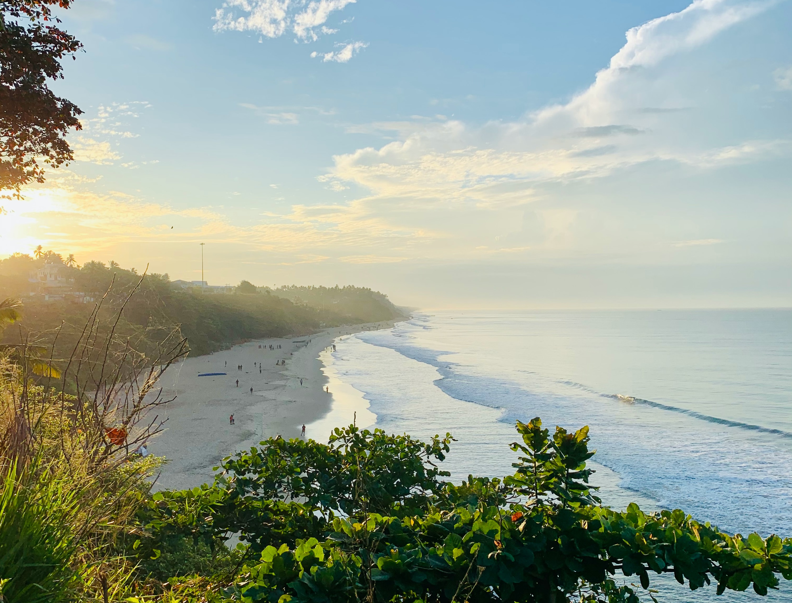

Varkala is a coastal town located in the southern Indian state of Kerala. Renowned for its stunning cliff-side views overlooking the Arabian Sea, Varkala is a popular destination for both domestic and international tourists seeking a tranquil beach experience. What sets Varkala apart is the dramatic red cliffs that line the coastline, providing a unique backdrop to the sandy beaches below. The main beach, Papanasam Beach, is known not only for its picturesque setting but also for the natural mineral springs that are believed to have medicinal properties.
One of the key attractions in Varkala is the Janardanaswamy Temple, an ancient Hindu temple dedicated to Lord Vishnu. Perched on top of the cliff, the temple offers breathtaking panoramic views of the sea. The temple attracts pilgrims and visitors alike, adding a cultural and spiritual dimension to the coastal town. Additionally, Varkala is also known for its vibrant and laid-back atmosphere, with numerous beachside cafes and shops lining the cliff, offering a perfect setting for relaxation and enjoying the scenic beauty.
Varkala is not only a place of natural beauty but also a hub for Ayurvedic treatments and yoga retreats. Many visitors come to Varkala seeking rejuvenation and wellness, taking advantage of the traditional Ayurvedic therapies offered in the numerous wellness centers and spas. The combination of serene beaches, spiritual vibes, and wellness opportunities makes Varkala a distinctive destination that caters to various interests, from those seeking adventure to those desiring a peaceful retreat.
Varkala has a rich history that dates back centuries. The region has historical significance with its association with various kingdoms, traders, and cultural influences. The area's historical roots can be traced to the ancient period, with references to it in ancient texts like the Puranas.
Varkala is believed to have been a part of the ancient Ay kingdom, one of the 14 Chera territories mentioned in the Sangam literature. The region's historical importance is also attributed to its role as a prominent trade center, attracting merchants and traders from different parts of the world. The spice trade, which was a major economic activity in Kerala, likely contributed to the cultural exchange and prosperity of the region.
Throughout its history, Varkala has witnessed the rule of various dynasties, including the Cheras, the Cholas, and later, the Vijayanagara Empire. The influence of these kingdoms is reflected in the architecture, temples, and cultural practices of the region. The Janardanaswamy Temple in Varkala, dedicated to Lord Vishnu, is believed to be over 2,000 years old and stands as a testament to the historical and religious significance of the area.
During the medieval period, Varkala became a center for religious and cultural activities. It was also a hub for scholars and intellectuals, contributing to the intellectual heritage of Kerala. The arrival of European powers, including the Portuguese, Dutch, and later the British, had an impact on the region's history, influencing trade and cultural exchange.
In more recent times, Varkala has transformed into a popular tourist destination while preserving its historical and cultural heritage. The cliffs, temples, and remnants of its ancient past continue to attract visitors who seek both natural beauty and a glimpse into the rich history of this coastal town.